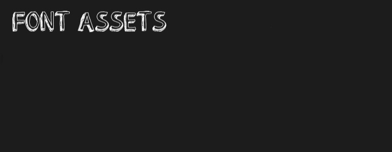
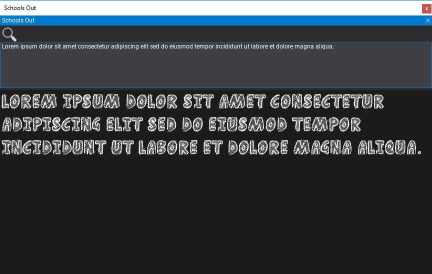
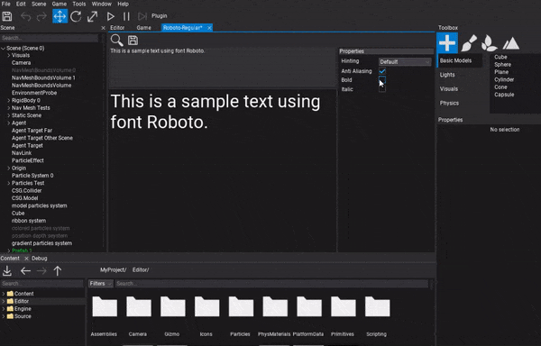
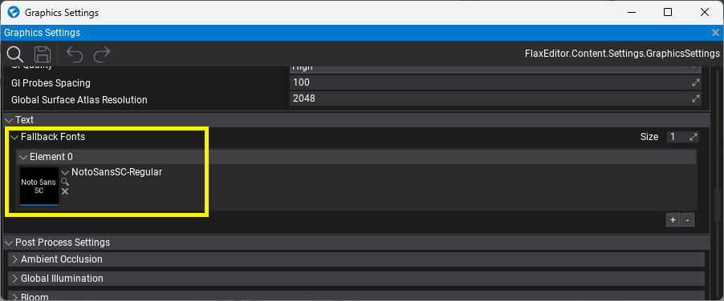

Fonts

Font Assets are binary resources that contain information of font characters (and/or prerendered characters texture). Flax performs the required importing, loading and rasterization of the font glyphs. Fonts are used by the 3D Text Render actor, as well as the UI system.
Flax uses the FreeType library for font character rasterization and offline rendering.
Importing fonts
You can import font files to use as font assets in your project. Flax supports importing the following file types as fonts:
.ttf.otf
The easiest way to import one or more fonts is to drag them from the file explorer to the Content Window. Alternatively, you can use the Import button in the Content Window toolbar and then select the files to import.
Font Window

Double-click on an imported font asset in the Content Window to open the dedicated font asset tool window. You can use it to type text and preview the font.
Font Properties

The font window can be used to preview and edit the font rasterization options:
| Property | Description | ||||||||||||
|---|---|---|---|---|---|---|---|---|---|---|---|---|---|
| Hinting | The font hinting used when rendering characters. Possible options include:
|
||||||||||||
| Anti Aliasing | Enables using anti-aliasing for font characters. Otherwise the font will use monochrome data. | ||||||||||||
| Bold | Enables an artificial embolden effect. | ||||||||||||
| Italic | Enables a slant effect, emulating italic style. |
Fallback fonts
When font used to draw text doesn't contains certain characters (eg. non-Latin set, emoji or icon) then fallback fonts can be used. Flax supports using one or more fallbacks when the primary font lacks a glyph to be displayed.
To setup this feature assign Fallback Fonts property in Graphics Settings:

In Editor, in-built font is used as a fallback by default - can be configured in Editor Options. Leave that empty to use the ones from Graphics Settings.